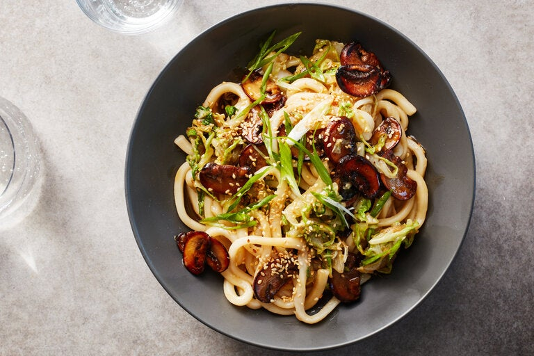

Return to main page

Description
In this weeknight dish, caramelized mushrooms are bathed in a satiny glaze of honey and butter, delivering the winning trifecta of sweet, savory and earthy. Cremini mushrooms are the hardest workers of the fungi world; they are inexpensive and accessible, and while they may not feel as fancy as some wild varieties, with some time in the pan, they burst with complex flavor. (Button mushrooms also do the job well.) Chubby udon are the ideal carriers for the luscious sauce, but for the most satisfying results, use fresh or frozen noodles, rather than the thinner dried strands. (Though in a pinch, they work, too).
Ingredients
- Kosher salt (Diamond Crystal)
- 1 1/2 pounds frozen or fresh udon noodles (vacuum-sealed)
- 2 tablespoons neutral oil, such as vegetable or grapeseed
- 1 pound cremini mushrooms, stemmed and sliced into ¼-inch pieces
- 4 garlic cloves, finely chopped
- Black pepper
- 3 tablespoons honey
- 4 tablespoons butter, preferably salted
- 1/2 small head Napa cabbage, finely
- sliced (about 1 pound)
- 3 tablespoons soy sauce
- 2 scallions, finely sliced
- 1 tablespoon sesame seeds, toasted
Recipe Instructions
- Bring a large pot of salted water to a boil, add the udon noodles and cook for about 2 minutes, using wooden chopsticks or tongs to gently loosen the noodles from their tight bundle. Drain, rinse with cold water and leave to continue draining while you prepare the remaining ingredients.
- Heat a wok or large (12-inch) skillet on medium-high, until very hot. Add oil and mushrooms, and stir-fry for 7 to 8 minutes, leaving undisturbed for 30 seconds to 1 minute at a time, to allow them to caramelize. (Be patient: They will release a lot of liquid, then start to brown.) Add the garlic, ½ teaspoon salt and a few turns of black pepper. Drizzle the mushrooms with 2 tablespoons of honey, then add 3 tablespoons of butter and toss.
- Add the udon noodles, Napa cabbage and soy sauce to the pan, then toss for 2 minutes, until the cabbage is wilted and everything is well combined. Remove from the heat and add the remaining 1 tablespoon honey and 1 tablespoon butter. Taste and season with more salt and black pepper, if required. To serve, scatter with scallions and sesame seeds.
Return to top
Return to main page